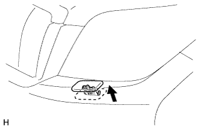
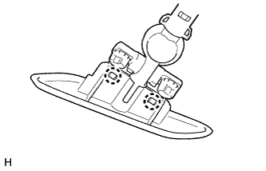

КРЫШКА ПРИВОДА ОМЫВАТЕЛЯ ФАРЫ > СНЯТИЕ |
| 1. СНИМИТЕ ФОРСУНКУ ОМЫВАТЕЛЯ ЛЕВОЙ ФАРЫ ТИПА 1 В СБОРЕ |
|  |
Выдвиньте форсунку омывателя фары рукой.
|  |
Расцепите 2 захвата и снимите форсунку омывателя фары.
| 2. СНИМИТЕ ФОРСУНКУ ОМЫВАТЕЛЯ ПРАВОЙ ФАРЫ ТИПА 1 В СБОРЕ |